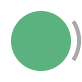

Creates a ContextTask that orchestrates data acquisition for an ONIX system.
ONIX is built on top of the Open Neuro Interface (ONI) hardware specification and API. One of ONI's requirements is the creation of a "context" that holds information needed for communication between a host computer and ONI-compliant hardware. The context holds data such as the device driver that will be used to communicate with hardware, what devices (e.g. headstages and their internal components) are currently connected, how often data should be read by the host computer, etc. CreateContext creates this required ONI context for a single ONIX system. The ONIX system that the context serves is uniquely identified within a host computer by the Driver used to communicate with hardware and the Index, which is a enumeration that is translated by the driver into a physical interface (e.g. a particular PCIe slot) within the host computer.
Inputs & Outputs
Generates a sequence that creates a new ContextTask object.
|
|
 |
|
Properties
| Property | Type | Description |
|---|---|---|
Driver
|
string |
Gets or sets a string specifying the device driver used to communicate with hardware. |
Index
|
int |
Gets or sets the index of the host interconnect between the ONI controller and host computer. For instance, 0 could correspond to a particular PCIe slot or USB port as enumerated by the operating system and translated by an ONI device driver translator. A value of -1 will attempt to open the default index and is useful if there is only a single ONI controller managed by the specified selected Driver in the host computer. |